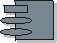

Artifacts >
Artifacts >
 Implementation Artifact Set >
Implementation Artifact Set >
 Implementation Model... >
Component
Implementation Model... >
Component
Artifacts >
Implementation Artifact Set >
Implementation Model... >
Component
Artifact:
| ||||||||||||||||||||||
|
 Component |
A component represents a piece of software code (source, binary or executable), or a file containing information (for example, a startup file or a ReadMe file). A component can also be an aggregate of other components; for example, an application consisting of several executables. |
| UML representation: | Components, possibly stereotyped as, for example, 첺pplication�, 첾ocument�, 첿xecutable�, 쳀ile�, 쳊ibrary�, 쳎age�, 쳓able� or 쳓est component� |
| Role: | Implementer |
| Optionality: | Use of any of the stereotypes is optional. |
| More information: | |
| Input to Activities: | Output from Activities: |
A component represents a physical asset of the development process: files of some sort that contain source, configurations, executables, and other physical products of development.
|
Property Name |
Brief Description |
UML Representation |
| Name | Component name | The attribute "Name" on model element |
Components may be created in the Inception Phase during the creation of User Interface Prototypes; though this is relatively minor. Architecturally significant components are created in the Elaboration Phase as the architectural prototypes are developed. Remaining components are created in the Construction Phase. Components are updated during the Transition Phase as defects are found and fixed.
An implementer is responsible for the component, and ensures that:
The type of component to use depends on the programming language and the implementation
environment in general. For examples of different types of components, see Guidelines:
Component.
|
Rational Unified
Process
|